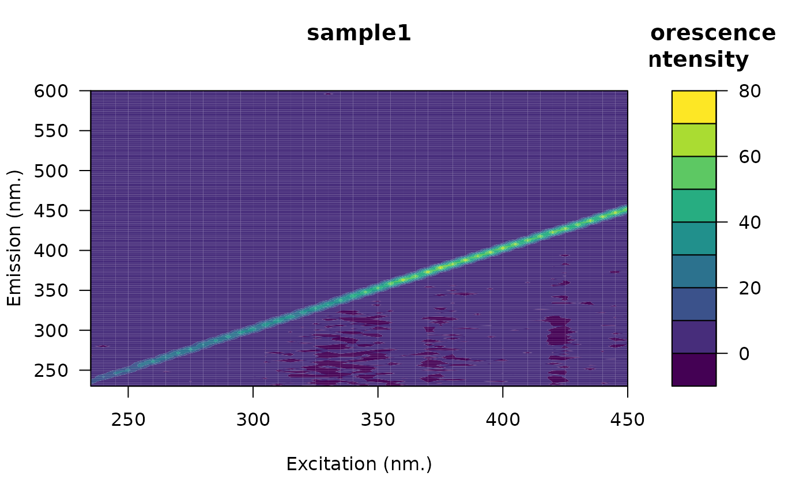
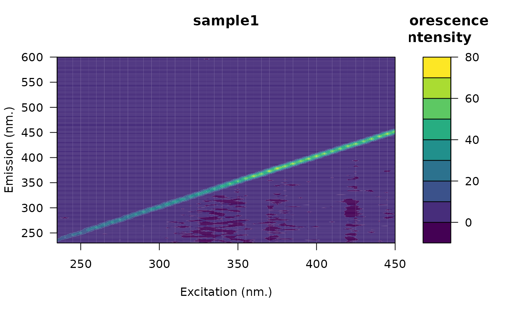

Cut emission and/or excitation wavelengths from EEMs
Arguments
- eem
An object of class
eemlist.- ex
A numeric vector of excitation wavelengths to be removed.
- em
A numeric vector of emission wavelengths to be removed.
- exact
Logical. If TRUE, only wavelengths matching
emand/orexwill be removed. If FALSE, all wavelengths in the range ofemand/orexwill be removed.- fill_with_na
Logical. If TRUE, fluorescence values at specified wavelengths will be replaced with NA. If FALSE, these values will be removed.
Examples
# Open the fluorescence eem
file <- system.file("extdata/cary/scans_day_1/", "sample1.csv", package = "eemR")
eem <- eem_read(file, import_function = "cary")
plot(eem)
 # Cut few excitation wavelengths
eem <- eem_cut(eem, ex = c(220, 225, 230, 230))
plot(eem)

eem <- eem_read(file, import_function = "cary")
eem <- eem_cut(eem, em = 350:400, fill_with_na = TRUE)
plot(eem)
# Cut few excitation wavelengths
eem <- eem_cut(eem, ex = c(220, 225, 230, 230))
plot(eem)

eem <- eem_read(file, import_function = "cary")
eem <- eem_cut(eem, em = 350:400, fill_with_na = TRUE)
plot(eem)